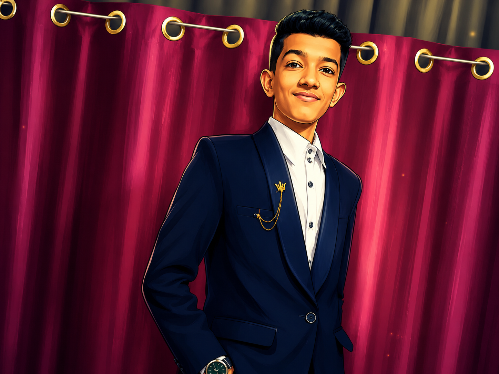

Diploma in Computer Engineering Student
Aspiring AI • Machine Learning • Data Analyst

// 01. About Me
I am a Diploma in Computer Engineering student who likes learning by building. My current focus is Python, Machine Learning, Data Analysis, Power BI, SQL, and portfolio projects that look clean and professional.
I am not trying to keep beginner clutter in my portfolio. I want a strong, recruiter-friendly website that shows real direction, real skills, and real progress.
// 02. Education
K. J. Somaiya Polytechnic, Mumbai
Semester 2: 88.67%
Secondary School Certificate
Score: 90%
AI Engineer / ML Engineer / Data Analyst
Building skills through projects + internships
// 03. Technical Stack
// 04. Featured Work
Only strong, relevant work. No beginner clutter.
A self-built Python assistant that handles voice-driven system actions and automation workflows.
End-to-end classification pipeline using ColumnTransformer, preprocessing, and model serialization for attrition prediction.
Risk classification project for predicting employee attrition using feature engineering and model evaluation.
A polished notebook focused on exploration, missing values, correlations, and observation writing.
A Python scraping workflow that converts unstructured web data into analysis-ready tabular form.
A classification model that maps academic and skill features to placement probability.
// 05. Certificates
Keep only the certificates that strengthen the story. Remove beginner clutter.
Forage
Data / analytics relevant
GenAI workflow
Foundational Python
Core ML basics
// 06. Contact
For internships, collaborations, or project discussions, use the links below.